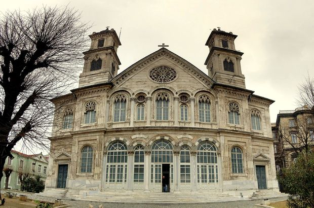
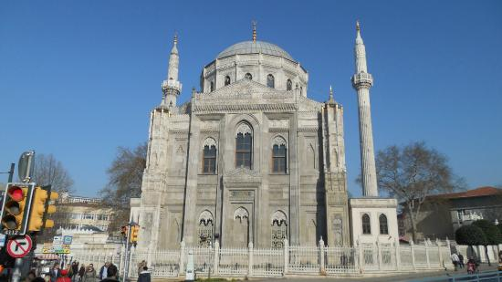

Arkeoloji Müzesiİstanbul Arkeoloji müzeleri 3 ana birimden oluşur.Eski sark eserleri, çinili kask müzesi ve arkeoloji müzesidir. Koleksiyonlar imparatorluk toplaklarından getirilen, çeşitli kültürlere ait eserlerdir.Müzecilik merekının izlerini Osmanlı'da FSM dönemine kadar uzanır ancak kurumsal olarak ortaya çıktısı 1869 yılına denk geliyor.Müzede en eski yapı (miladı 1472) Çinili Köşktür. |
Topkapı Sarayı MüzesiOsmanlı Devletinin yönetim merkezi ve padişahların resmi ikametgahı şeklinde yaklaşık 380 yıl kullanılan Topkapı Sarayı İstanbul'da sarayburnunda yer alan binalar manzumesidir. Sarayın ilk defa bir muze gibi ziyarete açılması Sultan Abdulmecit devrine yansır. O devrin ilgiliz elçısine sarayı gezdirerek hazinedeki eşyaları göstermiş.Daha sonra yabancılara gösterilmesi gelenek olmuştur. |
Ayasofya MüzesiAyasofya, İstanbul'daki en büyük doğu roma kilisesidir. Osmanlı döneminde camii olarak varlığını sürdürmüştür. 6. yüzyıla ait orjinal tavan mozaikleri bitkisel ve geometrik motifleriyle büyülüyor. Ayasofyada vazftizci Yahya ile Deisis sahnesi mozikleri ve padişah türbeleri mutlaka görülmelidir. Ayasofya’nın tarihine bakabilmemiz için önce İstanbul tarihine, dolayısıyla... |
 |
 |
|
Kariye MüzesiChora klisesinden müzeye dönüştürülen Edirnekapıda bulunan bir müzedir önemli dini merasimlere eşlik etmiştir. Batı Giriş bölümü Hz.İsa'yı iç nartekste ise Hz.Meryem'in hayatını anlatan mozaikler vardır.Canlı bir anlatıma sahip olan fresklerde Hristiyan teolojisinde önemli sahneler betimliyor... |
Dolmabahçe Sarayı MüzesiYapımı 1856 yılında Mimar Garabet Balyon tarafından tamamlanmış olan saray, önceden spor alanı olarak değerlendirlirmekteydi. 250 bin m2'lik bir alan üzerine kurulmuştur. Sarayda Şehzade ve prensesler tarafından kullanılmış kıyafetler ve el işleri,mühürler ve kaşıkçı elması gibi elmaslar sergilenmektedir... |
Rahmi Koç Müzesi
1994 yılında kurulmuştur. Türkiye'nin iletişim, sanayi, ulaşım ve endüstiri tarihine adanmış oldukça önemli bir müzedir. Koleksiyonda yer alan parçaların
katagorileri şuşekildedir; |
Sakıp Sabancı Müzesiİstanbul Emirganda bulunan 1925 yılında İtalya Mimar Edouvard De Nari tarafından yapılan bir müzedir. Sakıp Sabacının Zengin hat ve koleksiyonunu barındıran kask 1998 yılında müzeye dönüştürülmüştür. |
Rezan Has Müzesi2007 mayıs ayında Kültür ve Sanat dünyasına girmiştir. Müzede yer alan II.yüzyılda tarihlenen Bizans dönemine su sarnıcı 48 kemer, 15 ayak ve 20 sütündan oluşur. |
İstanbul Modern MüzesiTürkiyede 20.yy başından günümüze denk üretilen resim, heykel, yerleştirme, fotoğraf gibi farklı çalışmalar ve farklı coğrafyalardan günümüze sanatının önemli temsilcileriyle dünya sanatının güncel örneklerinden bir kesit sunulur. |
İstanbul Deniz Müzesi31 Agustos 187 yılında Binbaşı Süleyman Nutki tarafından kurulmuştur. Müzede Atatürk'e ait eşyalar, tarihi kayıtlar, silahlar, üniformalar sergilenmektedir. |
 |
||
Aya İstefanos Kilisesi (Bulgar Kilisesi)1230’da rahipler, kurucuları Assisili Aziz Fransua adına, Galata civarında bir kilise inşa ettiler. 2 kere yangın geçiren kilisenin konumu beyoğluna taşınmıştır. Osmanlı İmparatorluk saray ve devlet hizmetinde bulunan ve ayrıca ticaretle uğraşan Katolik ülkelerin ( Italyan-Fransız) vatandaşları ve onların aileleri için inşa edildi ve kutsandı. |
St. Antony of Padua Katolik Kilisesi2007 mayıs ayında Kültür ve Sanat dünyasına girmiştir. Müzede yer alan II.yüzyılda tarihlenen Bizans dönemine su sarnıcı 48 kemer, 15 ayak ve 20 sütündan oluşur.
|
St. George Fener Rum Patrikhanesi1836 yılında Haliç'de inşa edilmiştir. Kilisenin İçerisinde Bizans Dönemine Ait Mozaikler Ve Kutsal Emanetler Bulunmaktadır. Kilisede Hristiyanlığa ait İsa'nın Kudüs'te zincirlenerek kırbaçlandığına inanılan taş ve 3 Azizenin Tabutu birer kutsal emanet olarak yer almaktadır. |
|  |  |
|
Aya Triada Rum Ortodoks Kilisesiİstanbul Taksim’de, Sıraselviler caddesi ile İstiklal caddesinin kesiştiği üçgende yer alan kilise;1879 da inşa edilmiş olup haç planlı, iki çan kulesine sahiptir. Bizans mimarisi ile modern mimarinin bir sentez örneğidir. Kilisenin adı Kutsal üçlünün Hristiyanlıkta ki yerinin tasvirinden gelmektedir. |
Aya İrini Kilisesi, St. EireneAya İrini Kilisesi, aynı zamanda St. Eirene olarak da anılmaktadır ve tarihi 6. yy'a uzanmaktadır. Kilise İstanbul tarihi yarımadada Topkapı Sarayının 1. avlusunda bulunmaktadır. Aya İrini Kilisesi, İstanbul'un en eski Bizans kiliselerindendir.
|
|  |  |
|
Pertevniyal Valide Sultan Camiiİstanbul Suriçi Aksaray meydanında 1869-1870 tarihlerinde Atatürk Bulvarı ile Turgut Özal Caddelerinin kesiştiği yapı adasında Sultan I. Abdülaziz’in annesi ve Sultan II. Mahmut'un eşi olan Pertevniyal Valide Sultan için inşa ettirilmiştir. Cami planlarını Sarkis Balyan'ın çizdiği, hazırlanmasına Hagop Balyan`ın katıldığı da bilinmektedir. Mimarı Montani'dir. Çizim işlerinde, desinatör Osep çalışmıştır. Uygulama ve şantiye yönetimi için Bedros Kalfa ve duvarcı Ohannes ile dülger kolbaşısı Dimitri görevlendirilmiştir... |
Sultanahmet CamiiSultanahmet Camii, Osmanlı Sultanı I. Ahmet tarafından 1609 – 1616 tarihleri arasında yaptırılmıştır. Klâsik Türk sanatının en tipik örneği olan eser, orijinal olarak 6 minare ile inşa edilen ilk camidir. Mimar Sinan'ın eserlerinden biri olmadığı halde bu yapı Sinan'dan izler taşımaktadır. Sinan’ın öğrencisi Mimar Sedefkâr Mehmet Ağa, söylenene göre, camiyi inşa ederken, üstadının daha önce denediği bir planı daha büyük bir ölçüde uygulamıştır... |
Eyüp Sultan CamiiEyüp Sultan Camii, İstanbul'un fethinden 5 yıl sonra 1458 yılında inşa edilmiştir. Camiden önce yanında inşa edilmiş olan Eyüp Sultan Hazretleri'nin Türbesi'nin yer alması bu caminin önemini vurgulamaktadır. Külliye yapısı olarak inşa edilen camii, İstanbul’un Haliç kıyısının ucundaki Eyüp semtinde bulunmaktadır. Arapların İstanbul’u kuşatması sırasında şehit olan ve İslamiyeti ilk kabul edenlerden biri olan Hz. Eyyub El-Ensari’nin kabrinin bulunduğu yerdedir... |
 |
||
Mihrimah Sultan Camiiİstanbul'un en yüksek tepelerinden biri olan altıncı tepede bulunan Mihrimah Sultan Cami, 16 . yüzyıl eseridir. Mimar Sinan, Mihrimah Sultan adına İstanbul’da iki yapı inşa etmiş.; biri Edirnekapı surlarının dibinde (altıncı tepede) bulunan cami iken, diğeri Üsküdar’da inşa edilmiştir. İstanbul’un altıncı ve en yüksek tepesinde yer alan Edirnekapı Mihrimah Sultan Camii’nde ise, sarkıt ve minare işlemelerinde saçları topuklarını döven bir kadın tasviri olduğu söylenir... |
Kalenderhane CamiiDoğu Roma döneminden kalma bir yapıdır. Bozdoğan Kemeri'nin en doğu ucunun güneyinde yer alır. Doğu Ortodoks Kilisesi formundadır. 18. yüzyılda Osmanlı'lar tarafından camiye çevrilmiştir. Yüksek olasılıkla kilise ilk durumunda Theotokos Kyriotissa'ya adanmıştı. Yapı, Yunan haçı kemerli Bizans kilisesi örneğinin var olan birkaç örneğinden birini temsil eder. Plan ve üslup özelliklerine göre binanın 9. veya 10. yüzyıla ait olduğu varsayılır... |
Mecidiye CamiiOrtaköy Camii 19 .yy' dan kalma İstanbul'un en güzel yapılarından birisidir . Ortaköy Camii'nin asıl adı Büyük Mecidiye Camii olan yapı 1854 yılında tamamlanmıştır. Caminin bulunduğu yere ilk olarak yapılan yapının Mahmud Ağa tarafından yapıldığı fakat bu yapının Patrona Halil İsyanı sırasında çok fazla hasar görerek yıkıldığı bilinmektedir. Sonraları Mahmud Ağa’nın damadı Kethüda Devattar Mehmed Ağa tarafından yenilenerek kayıtlara ” Mehmed Kethüda Cami-i Şerifi ” olarak geçmiştir... |
 |
 |
|
Ayasofya CamiiAyasofya Doğu Roma İmparatorluğu’nun İstanbul’da yapmış olduğu en büyük kilise olup aynı yerde üç kez inşa edilmiştir. İlk yapıldığında Megale Ekklesia (Büyük Kilise) olarak adlandırılmış, 5. yüzyıldan itibaren ise Ayasofya (Kutsal Bilgelik) olarak tanımlanmıştır. Ayasofya Doğu Roma İmparatorluğu boyunca hükümdarların taç giydiği, başkentin en büyük kilisesi olarak katedral işlevi görmüştür. Ayasofya, Fatih Sultan Mehmed’in (1451-1481) 1453’te İstanbul’u fethetmesiyle camiye çevrilmiştir. Fetihten hemen sonra yapı güçlendirilerek en iyi şekilde korunmuş ve Osmanlı Dönemi ilaveleri ile birlikte cami olarak varlığını sürdürmüştür. |
Dolmabahçe CamiiAsıl adı Bezmialem Valide Sultan Camii olan ama konumu nedeniyle Dolmabahçe Sarayı bütünü içinde düşünülüp birlikte anılan Dolmabahçe Camii, iki yılı aşkın bir yapım süreci sonunda 23 Mart 1855’te bir cuma töreniyle ibadete açılmıştır. Caminin en belirgin biçimsel özelliği net bir kurgu ve geometriye sahip olmasıdır. Cami ve hünkar bölümleri, işlevlerine de bağlı olarak ayrı ayrı tasarlanmış ve sonra birleştirilmiş gibidir. Cami, kare planlı altyapı üzerine kubbeli ve yüksek bir kitledir. Hünkar bölümü ise, dikdörtgen planlı prizmatik ve daha alçak bir kitledir. Bu iki kitle, caminin kuzey cephesi yönünde bitiştirilirler... |
Fatih Camii
Fatih Camii, İstanbul'un fethinden sonra İstanbul'dan yaptırılan ilk selatin camisi olma özelliği taşımaktadır. Selatin camileri, Osmanlı'da sultanlar ve aileleri
tarafından yaptırılan camilerin geneline verilen isimdir. Fatih Camii, Fatih Sultan Mehmet tarafından yaptırılmış olup, içerisinde 16 tane medrese, hamam, aşevi,
kütüphane, konukevi ve hastane barındırmaktadır. Fatih Camii, 1766 yılındaki depremde büyük hasar almış, 1971 tarihinde tekrar inşa edilip onarılmıştır.
Gölcük depreminin ardından yaşadığı zemin kayması sonrası ibadete ara verilmiş, 2012 yılında ibadete tekrar açılmıştır. Atik Sinan tarafından yapılan caminin,
ilk günkü hali ile günümzdeki hali çok farklıdır... |
Kılıç Ali Paşa CamiiKılıç Ali Paşa Camii, İstanbul Tophane meydanında, Meclis-i Mebusan caddesi üzerinde 1580 yıllında Kılıç Ali paşa tarafından Mimar Sinan’a inşa ettirilmiş külliyenin ana yapısıdır. Kılıç Ali Paşa Camii ve Külliyesi, geniş bir avlu ile çevrili. Avluya simetrik duvarlarındaki dört ayrı kapı ile girilebiliyor. Avlu ortasında zarif bir kubbe ile örtülü şadırvanı ise son derece göz alıcıdır. Şadırvanlı avludan demir parmaklıklı iç avluya geçildiğinde biri beş kubbeli ve altı sütunlu, diğeri ise ahşap, ağaç oyma ve işlemeciliğinin en zarif örnekleri ile süslenmiş bir saçakla örtülü iki tane son cemaat mahalline ulaşılır... |